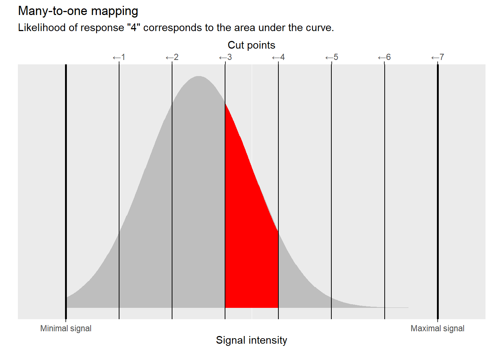
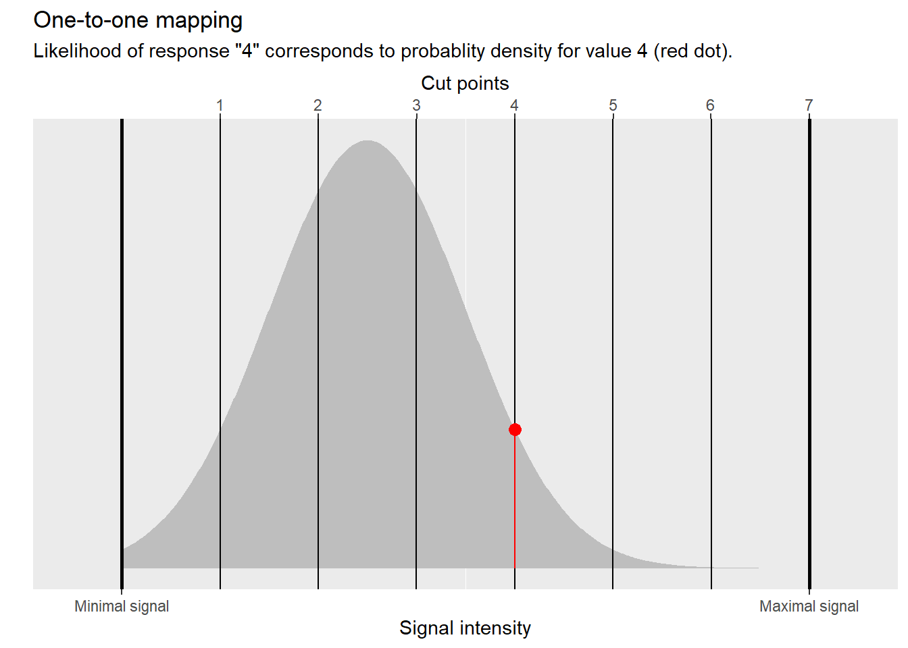
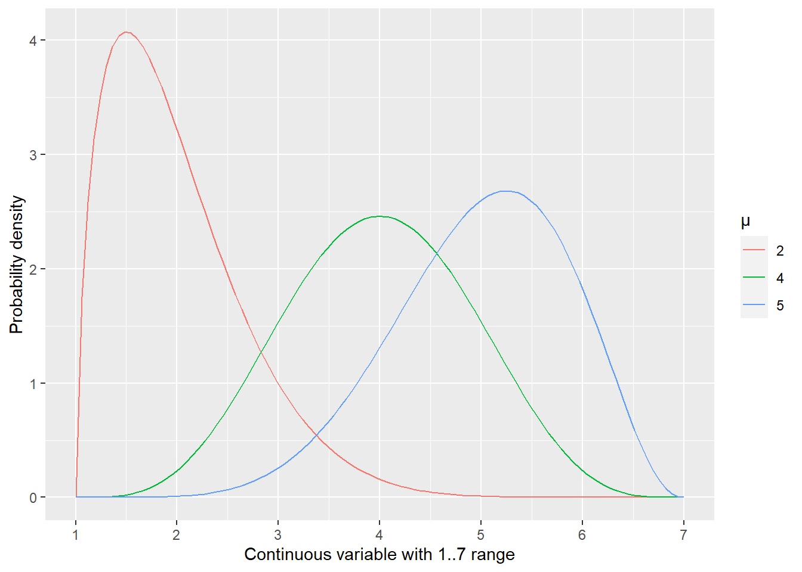

18 Ordered Categorical Data, i.e., Likert-scales
One of a very popular type of response in psychology and social sciences are so-called Likert-scale response. For example, you may be asked to respond on how attractive you find a person in a photo from 1 (very unattractive) to 7 (very attractive). Or to respond how satisfied you are with a service from 1 (very unsatisfied) to 4 (very satisfied). Or rate your confidence on a 5-point scale, etc. Likert-scale responses are extremely common and are quite often analyzed via linear models (i.e., t-test, repeated measures ANOVA, linear-mixed models) assuming that response levels correspond directly to real numbers. The purpose of these notes is to document both technical and, more importantly, conceptual problems this approach entails.
18.1 Conceptualization of responses: internal continuous variable discritized into external responses via a set of cut-points
First, let us think what responses correspond to as it will become very important once we discuss conceptual problems with a common “direct” approach of using linear models for Likert-scale data.
When we ask a participant to respond “On scale from 1 to 7, how attractive do you find the face in the photo?”, we assume that there is a continuous internal variable (for example, encoded via a neural ensemble) that represents attractiveness of a face (or our satisfaction with service, or our confidence, etc.). The strength of that representation varies in a continuous manner from its minimum (e.g., baseline firing rate, if we assume that strength is encoded by spiking rate) to maximum (maximum firing rate for that neural ensemble). When we impose a seven-point scale on a participants, we force them to discretize this continuous variable, creating a many-to-one mapping. In other words, a participant decides that values (intensities) within a particular range all get mapped on 1, a different but adjacent range of higher values corresponds to 2, etc. You can think about it as values within that range being “rounded” (regressed?) towards the mean that defines the response. Or, equivalently, you can think in terms of cut-points that define range limits. This is how the discretization is depicted in the figure below. If the signal is below the first cut point, our participant response is “1”. When it is between first and second cut points, the response is “2” and so on. When it is to the right of the last sixth cut point, it is “7”. This conceptualization means that responses are an ordered categorical variable, as any underlying intensity for a response “1” is necessarily smaller than any intensity for response “2” and both are smaller than, again, any intensity for response “3”.
As per usual, we assume that our continuous variable is noisy and its values can be described as being drawn from a normal distribution centered at the “true” intensity level34. Here, the consistency of responses will depend on the width (standard deviation) of this distribution. The broader this distribution and / or closer it is to a cut-point, the more activity will “spill over” into adjacent regions and more variable discrete responses will be.
Given this conceptualization, our goal is to recover both the cut-points and the normal distribution using only observed responses.
18.2 Conceptual problem with linear models: we change our mind about what responses correspond to.
A very common approach is to fit Likert-scale data using a linear model (a t-test, a repeated-measures ANOVA, linear-mixed models, etc.) while assuming that responses correspond directly to real numbers. In other words, when participants responded “very unattractive”, or “not confident at all”, or “do not agree at all” they literally meant a real number \(1.0\). When they used the middle (let’s say the third) option “neither agree, nor disagree” they literally meant \(3.0\).

This assumption appears to simplify our life dramatically but at the expense of changing the narrative. Recall that our original (and very intuitive) conceptualization was that responses reflect a many-to-one mapping between an underlying continuous variable and a discrete (ordered categorical) response. But by converting them directly to numbers and using them as an outcome variable of a linear model we assume a one-to-one mapping between the internal variable and observed responses. This means that from a linear model point of view, for a 7-point Likert scale any real value is a valid and possible response and therefore participant could have responded with 6.5, 3.14, or 2.71828 but, for whatever reason (sheer luck?), we only observed a handful of (integer) values.

Notice that this is not how we think participants behave. I think everyone35 would object to the idea that the limited repertoire of responses is due to endogenous processing rather than exogenous limitations imposed by an experimental design. Yet, this is how a linear model thinks about it (given the outcome variable you gave it) and, if you are not careful, it is easy to miss this change in the narrative. It is, however, important as it means that estimates produced by such model are about that alternative one-to-one kind of responses, not the many-to-one that you had in mind! That alternative is not a bad story per se, it is just a different story that should not be confused with the original one.
This change in the narrative of what responses correspond to is also a problem if you want to use a (fitted) linear model to simulate the data. It will happily spit out real valued responses like 6.5, 3.14, or 2.71828 (if you feel lucky enough to expect an integer response, you’d better use this luck on playing an actual lottery). You have two options. First, you bite the bullet and take them at their face value, sticking to “response is a real-valued variable” and one-to-one mapping between an internal variable and an observed response. That let’s you keep the narrative but means that real and ideal observers play by different rules. Their responses are different and that means your conclusions based on an ideal observer behavior are of limited use. Alternatively, you can round real-valued responses off to a closest integer getting discrete categorical-like responses. Unfortunately, that means changing the narrative yet again. In this case, you fitted the model assuming one-to-one mapping but you use its predictions assuming many-to-one. Not good. It is really hard to understand what is going on, if you keep changing your mind on what a response means. A linear model will also generate out-of-range responses, like -1 or 8. Here, you have little choice but to clip them into the valid range, forcing the many-to-one mapping on at least some responses. Again, change of a narrative means that model fitting and model interpretation rely on different conceptualizations of what response is.
This may sound too conceptual but I suspect that few people, who use linear models on Likert-scale data directly, realize that their model is not doing what they think it is doing and, erroneously!, interpret one-to-one linear-model estimates as many-to-one. The difference may or may not be crucial but the question is: Why employ a model that does something different to what you need to? Remember, using an appropriate model and interpreting it correctly is your job, not that of a mathematical model or nor is it a job of a software package.
18.3 A technical problem: Data that bunches up near a range limit.
When you use a linear model, you assume that residuals are normally distributed. This is something that you may not be sure of before you fit a specific model, as it is residuals not the data that must be normally distributed. However, in some cases you may be fairly certain that this will not be the case, such as when a variable has only a limited range of values and the mean (the model prediction) is close to one of these limits. Whenever you have observations that are close to that hard limit, they will “bunch up” against it because they cannot go lower or higher than that. See the figure below for an illustration of how it happens if a continuous variable \(x\) is restricted to 1 to 7 range36. 
The presence of a limit is not a deal breaker for using linear models per se. Most physical measures cannot be negative37 but as long your observations are sufficiently far away from zero, you are fine. You cannot have a negative height but you certainly can use linear models for adult height as, for example, an average female height in USA 164±6.4 cm. In other words, the mean is more than 25 standards deviations away from the range limit of zero and the latter can be safely ignored.
Unfortunately, Likert-scale data combines an extremely limited range with a very coarse step. Even a 7-point Likert scale does not give you much of a wiggle room and routinely used 5-point scales are even narrower. This means that unless the mean is smack in the middle (e.g., at four for a 7-point scale) and the distribution is very narrow, you are getting closer to one of the limits and your residuals become either positively (when approaching a lower limit) or negatively (for the upper one) skewed. In other words, the residuals are systematically not normally distributed and their distributions depends on the mean. This clearly violates an assumption of normality of residuals and of their conditional i.i.d. (Independent and Identically Distributed). This is a deal breaker for parametric frequentist statistics (a t-test, a repeated-measures ANOVA, linear-mixed models), so that inferences become unreliable and should not to be trusted.
18.4 Another technical problem: Can we assume that responses correspond to real numbers that we picked?
The skewed residuals described above are a fundamental problem for parametric frequentist methods but is not critical if you use Bayesian or non-parametric bootstrapping/permutation linear models. Does this mean it is safe to use them? Probably not. When you use responses directly, you assume a direct correspondence between a response label (e.g., “agree”) and a real number \(4.0\). If that is the case, you can assume that \((4 + 4) / 2\) is equal to \((3 + 5) / 2\) to \((2 + 6) / 2\) to \((1 + 7)/ 2\). However, what if this is not the case, what if the cut-points (responses) do not correspond to the real numbers that you’ve picked? Then our basic arithmetic stops working the way you think! Take a look at the figure below where “real value” of responses is not an integer.
Unless you know that response levels correspond to the selected real number and that the simple arithmetic holds, you are in danger of computing nonsense. This problem is more obvious when individual response levels are labelled, e.g., "Strongly disagree", "Disagree", "Neither disagree, nor agree", "Agree", "Strongly agree". What is an average of "Strongly disagree" and "Strongly agree"? Is it the same as an average of "Disagree" and "Agree"? Is increase from "Strongly disagree" to "Disagree" identical to that from "Neither disagree, nor agree" to "Agree"? The answer is “who knows?!” but in my experience scales are rarely truly linear as people tend to avoid extremes and have their own idea about range of internal variables levels that correspond to a particular response.
As noted above, even when scale levels are explicitly named, it is very common to “convert” them to numbers because you cannot ask computer to compute an average of "Disagree" and "Agree" (it will flatly refuse to do this) but it will compute an average of \(2\) and \(4\). And there will be no error! And it will return \(3\)! Problem solved, right? Not really. Yes, the computer will not complain but this is because it has no idea what \(2\) and \(4\) stand for, you give it real numbers, it will do the math. So, if you pretend that "Disagree" and "Agree" correspond directly to \(2\) and \(4\) it will certainly look like normal math. And imagine that responses are "Disagree" and "Strongly agree", so the numbers are \(2\) and \(5\) and the computer will return an average value of \(3.5\). It will be even easier to convince yourself that your responses are real numbers (see, there is a decimal point where!), just like linear models assume. Unfortunately, you are not fooling the computer (it seriously does not care), you are fooling yourself. Your math might check out, if responses do correspond to the real numbers you’ve picked, or it might not. And in both cases, there will be no warning or an error, just some numbers that you will interpret at face value and reach possibly erroneous conclusions. Again, the problem is that you wouldn’t know whether the numbers you are looking at are valid or nonsense and the same dilemma (valid or nonsense?) will be applicable to any inferences and conclusions that you draw from them. In short, a direct correspondence between response levels and specific real numbers is a very strong assumption that should be validated, not taken on pure faith.
18.5 Solution: an ordered logit/probit model
Above I have summarized the problems of using linear models when assuming that responses correspond to real numbers. Instead, you should use ordered logistic/probit.) models. They are built using the many-to-one mapping conceptualization using a set of cut-points. The latter can be fixed or, better still, fitted as part of the model. Both models assume that the distribution of the underlying continuous variable is normal and, therefore, both the continuous variable and cut points live on the infinite real number line that is transformed to 0..1 range via either logit or probit link function. The latter step is, strictly speaking, not necessary but makes things easier both for math and for understanding.
From a mathematical point of view, using logit and probit makes it easy to compute the area under the curve that is between two cut points. Logit or probit are cumulative functions, so for a standard normal distribution (centered at \(0\) with standard deviation of \(1\)) they compute an area under the curve starting from \(-\infty\) up to some point \(k_i\). Therefore, if we want to compute an area between two cut points \(k_{i-1}\) and \(k_i\), we can do it as \(logit(k_{i})-logit(k_{i-1})\) (same goes for probit).
# figure for logit Transforming from real space to 0..1 range also makes it easier to understand relative positions of cut points and changes in continuous variable (that we translate into discrete responses via cut points).